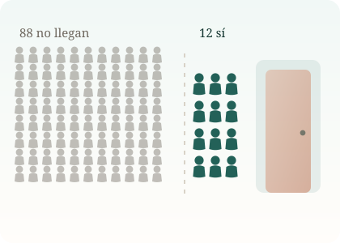

La problemática en el Perú
El problema peruano no es solo cuántas personas tienen síntomas depresivos. Es cuántas de ellas no llegan nunca a un profesional.

Ilustración original del proyecto
Una brecha que no distingue
De cada cien personas que dan positivo en el tamizaje, unas ochenta y ocho no tuvieron contacto con un profesional de salud mental en todo el año. La cifra se mantiene por encima del ochenta por ciento en todos los grupos que examinamos: hombres y mujeres, ciudad y campo, todas las edades, todos los niveles educativos.
Eso descarta la explicación fácil. No es que un grupo concreto tenga menos acceso; es que el sistema no está llegando a casi nadie.
Por qué la gente no llega
La encuesta no pregunta por los motivos, así que aquí solo podemos señalar lo que la literatura y la propia estructura del sistema hacen plausible:
- No reconocerlo como un problema de salud. Si el malestar se vive como cansancio o como carácter, no lleva a nadie a un consultorio.
- Estigma. Pedir ayuda en salud mental sigue costando más que pedirla para cualquier otra dolencia.
- Disponibilidad desigual. Los servicios especializados se concentran en las ciudades grandes, no en los departamentos donde la prevalencia es más alta.
- Costo y tiempo. Llegar a una consulta puede significar un día de viaje y un día de trabajo perdido.